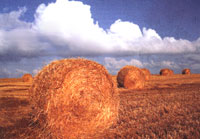
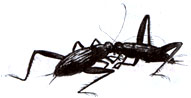
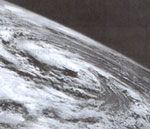
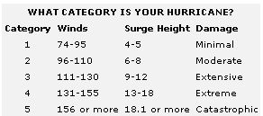

Seasons
Can cricket-song replace your garden thermometer? A harvest of fall weather information.
Nature's grandest storms, hurricanes, are heat engines that feed off the warmth of the ocean. Because ocean temperatures are at their highest in August and September, they are prime months for the most powerful of the mighty storms called "Atlantic" hurricanes.
If you live anywhere within a hundred miles or so of Atlantic or Gulf of Mexico coastal waters, knowing some basics about hurricanes and hurricane safety could make the difference between life and death.
By definition, a tropical cyclone must have sustained winds of at least 74 mph to be classified as a hurricane. Even a hurricane with winds no stronger than this can be life threatening in certain circumstances. But a hurricane's "disaster potential" is measured on the five-level Saffir/Simpson Scale. On that scale (see table on page 28), a hurricane may have sustained winds as high as 95 mph and yet still be considered a "category 1" storm, the weakest of the five categories!
The greatest killer and destroyer in a hurricane is most often the "storm surge." This is the mass of ocean water piled high by the winds. In the strongest hurricanes, the height of the storm surge can exceed 20 feet. For such storms, massive evacuation of all low-lying residential areas within five to 10 miles of the shore is often required.
The date August 17, 1994, is the 25th anniversary of the landfall of the strongest (category 5) hurricane to have struck the U.S. mainland in the 20th century: Hurricane Camille. Neither of the more recent and infamous hurricanes to hit the United States, Andrew and Hugo, were nearly as strong. Camille produced estimated wind gusts of up to 200 mph, and destruction near its point of landfall was near total. The death toll along the Gulf Coast was 144. Out of the dozens of peo ple who decided to stay at a local hotel to have a "hurricane party," there was only one survivor-a woman who managed to cling to wreckage as it floated away.
Only one other storm has hit U.S. land with category 5 force in the 20th century: the Labor Day hurricane of 1935. When this hurricane struck the Florida Keys on September 2, it produced a lower barometric reading and therefore presumably even higher winds than Camille at the height of the storm, lifted vast quantities of sand into the air, became electrified, and glowed. Some of the estimated 400 victims of the storm were sandblasted to death, their bodies found scoured of both clothes and skin.
We shouldn't need such horror stories to remind us that hurricanes must be treated with respect. There are several important points to remember. If you live in an area at all accessible to hurricanes, now-not when a storm is already approaching-is the time to formulate your plans. By which roads and to which destination will you go if you have to evacuate? How will you protect your property whether or not you leave? What supplies should you have if experts deem it safe for you to remain?
The timing of the steps you take is crucial. One of the most important things to know is the distinction between a "hurricane watch" and a "hurricane warning." A watch means that the hurricane is getting near, but that there is still time for final preparations. A warning means that the storm is imminent and that if evacuation is the sensible course, now is the time to leave (if you haven't already).
From the roar and shriek of hurricanes, we turn to a sound of a totally different kind. If you live in the country in most parts of the United States, you can tell with your eyes closed that it is late in the summer or early autumn: all you need to do is listen for the song of the crickets.
This music is a reminder to us that not just our summer vacation, but all the growth, light, and life of this year's installment of the living world is passing, as the cricket song's beat gets slower and more ragged. Naturalist Edwin Way Teale noted at his Massachusetts home that the katydids stopped singing when the temperature dropped to the low 50s (Fahrenheit), but that the "mellow rhythm of the snowy tree crickets" continued on until the thermometer dived down to the lower 40s. The tempo of the snowy tree crickets' song can itself be used as a fairly accurate thermometer. The rule is to count the number of chirps in 13 seconds, then add 40 to that number to obtain the temperature in degrees Fahrenheit. By the way, the "chirps" are actually produced by a cricket rubbing together parts of its wings and legs, a process called "stridulating" Only the male crickets do this.
Nearly everyone has heard of Harvest Moon. But what exactly is it, and why is it a positive thing?
Some lore masters would argue that Harvest Moon is the first Full Moon after the autumn equinox. But the majority declare that Harvest Moon is the Full Moon that occurs closest to the autumn equinox, and thus in 1994 happens on September 19. Astronomers would agree with the latter view. Why? Because they are interested in one characteristic, or behavior, of the moon that is exhibited more strongly the closer the Full Moon is to the autumn equinox. During that time, the moon rises at nearly the same time for a number of nights in a row. Actually, this "nearly the same time" is about 20 to 30 minutes later each night depending on what your latitude is in the contiguous United States. The remarkable thing is that during the course of the year the average amount by which the Full Moon rises later on a second night is more like one hour.
What practical good is it to have the Full Moon rise at almost the same time for several nights in a row? During these several nights, daylight and twilight are immediately replaced by bright moonlight-still bright enough for the farmer who doesn't want to quit harvesting to see in front of him and continue his work.
Nowadays, of course, farmers and other folks can throw up artificial lights. and harvest as late as they want. But humanity has been very sloppy and wasteful with outdoor artificial light (several billion dollars a year of it goes off uselessly into space from the United States due to poor lamp shielding).
The season after summer is the only one for which English-speaking people have two names: fall and autumn. "Fall" is clearly just a shortened form of "the fall of the leaf." No one is quite sure what the root meanings behind the Latin autumnus are. Writer Guy Ottewell suggests that it may be connected with aug, increase, but, as he notes, this would only make sense if it referred to the harvest (the increase or augmentation of our store of food).
Ottewell states that "fall" has essentially gone out of use altogether in England. I personally find "autumn" (and "autumnal") very beautiful-both in sound and form and mystery-and prefer them to the other name. But, as I think more about the matter, I realize that there is also an eloquence-disarmingly simple-about calling this season... "fall."
THE GREATEST DANGER... in a hurricane is not high winds but the "storm surge," or mass of rising ocean water which they create.
Almanac for August/September 1994
1 Laminas.
2 Temperature hit 107°F in Massachusetts this day in 1975.
7 NEW MOON, 4:44 A.M. EDT; halfway point of summer.
10 Sun enters constellation Leo; moon near Venus in West at dusk.
11 Watch for plentiful Perseid meteors in hours before dawn this morning; Dog Days end (according to one tradition).
12 Perseid meteor shower reaches peak this morning-watch after midnight for dozens an hour from north in a clear country sky, plus a small chance of a "meteor storm" (thousands of Perseids in a single hour!). The most likely time far a meteor storm may be about 3-5:00 A.M. EDT. A bonus for Perseid watchers is the great variety of meteors from other parts of the heavens. For instance, most meteors coming from the south or southwest after midnight in the first two weeks of August are members of the Delta Aquarid meteor shower (notice that they are slower than the Perseids).
14 FIRST QUARTER MOON, 1:58 A.M. EDT.
17 Hurricane Camille devastated Mississippi and Louisiana coast this evening in 1969.
21 FULL MOON (Green Corn Moon, Sturgeon Moon), 2:46 A.M. EDT.
23 Sun enters astrological sign Virgo.
24 Venus at greatest elongation from sun in evening sky (telescope shows it looking like an intense little half moon). Most times, Venus appears rather high in the dusk sky when it is at its greatest evening elongation, but this year is an exception.
29 LAST QUARTER MOON, 2:41 A.M. EDT.
31 Venus in close conjunction with bright star Spica.
1 Saturn at opposition, rises at dusk as brightest point of south of due east. Even a small telescope can show the famous rings. This autumn, they are not as tilted toward Earth as usual but still make a thrilling sight.
2 Great Labor Day hurricane of 1935 hit the Florida Keys (see text).
3 The largest hailstone on record, measuring 17.5 inches in circumference and 1.61 lb, fell this day in 1970 in Coffeville, Kansas.
5 Labor Day; NEW MOON, 2:32 P.M, EDT.
6 Rosh Hashanah.
7 Crazy Horse killed on this day in 1877.
8 Moon near Venus in west at dusk (with star Spica not far off).
9 Moon near Jupiter in west at dusk, with Venus below them.
11 Grandparents Day.
12 FIRST QUARTER MOON, 9:35 A.M. EDT.
14 Francis Scott Key wrote "The Star Spangled Banner" this day in 1814.
15 Yom Kippur (Day of Atonement).
16 Sun enters constellation Virgo. Virgo is the longest constellation of the zodiac. The sun does not move out of Virgo and on into Libra until October 31.
19 FULL MOON-Harvest Moon, 3:59 P.m. EDT. The Full Moon of September can also be called the Fruit Moon.
20 Succoth (First Day of Tabernacles).
23 Autumn Equinox (start of autumn), 2:21 A.M. EDT. On this day, all parts of the world get approximately equal amounts of day and night, and the sun rises due east and sets due west. An observer at Earth's equator will see the sun pass directly overhead at noon.
24 Venus closest to Jupiter at dusk in west sky.
25 Mars south of the star Pollux, high in the east before dawn. Compare the color and brightness of the two objects.
26 In the Northeast United States in 1950, day of the Blue Sun and Moon (caused by Canadian forest fire smoke).
27 LAST QUARTER MOON, 8:23 P.m. EDT.
28 Venus at greatest brilliancy, but low in west at dusk. Under the most favorable conditions, Venus has been seen to cast shadows!
29 Michaelmas. This is the day of the most powerful of angels, Michael, whom tradition says will battle and defeat Satan at the end of days. The day has also been dedicated to ail the angels-beings in whom humans recently seem to have developed a greatly increased interest (take a look at current movies, theater productions, and the best-seller list of books!).
|
 Charlie Waite/Stone Images Hurricane Gladys in the Gulf of Mexico, photographed from the Apollo 7 spacecraft on October 17, 1968, at an altitude of 99 nautical miles. |
 |
 |
|
 |
|
|